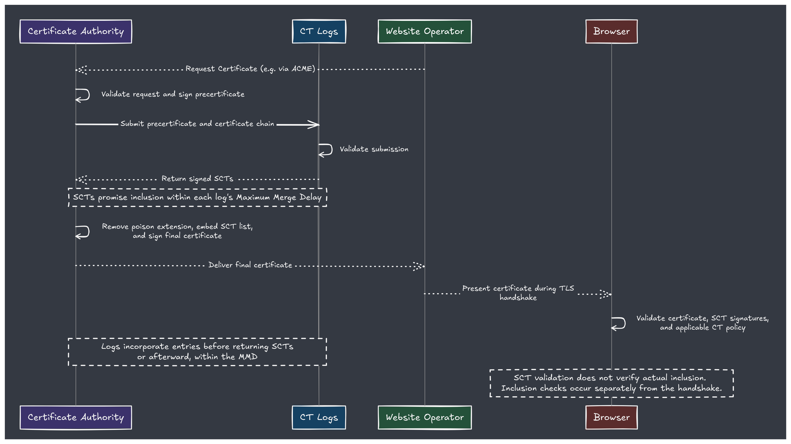
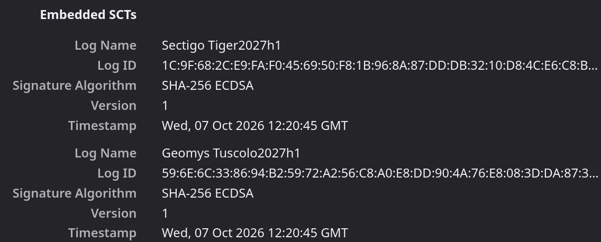
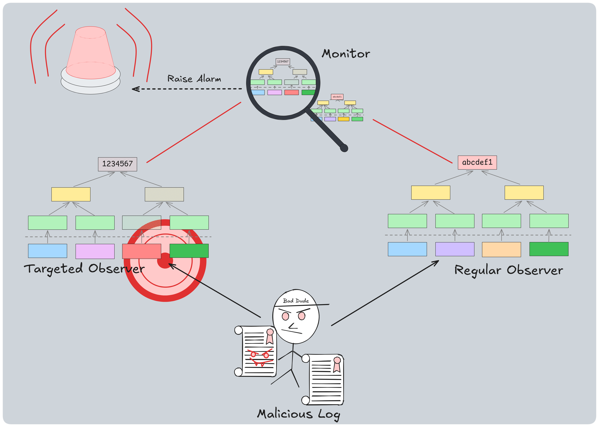
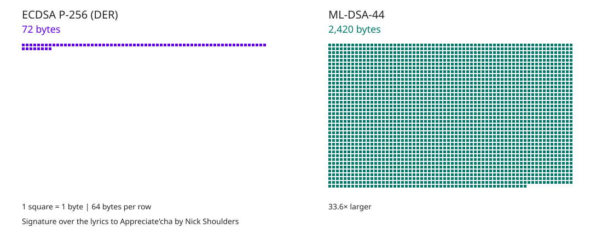

2026-11-18
Certificate Transparency (CT) was introduced in 2013 as a response to the DigiNotar breach1. RFC 6962 was published in June 2013 and was officially superseded by RFC 9162 in 2021. However, its CT v2 protocol has not seen widespread deployment. Root programs and log operators have moved towards static CT logs2, which retain RFC 6962’s precertificate/SCT model while replacing the read API. Starting in 2027 the Chrome root program plans to begin Merkle Tree Certificate bootstrapping. Because of this, I’ll cite RFC 6962 throughout this article instead of 9162.
Browsers trust many CAs3 and unconstrained publicly trusted CAs can issue certificates for any domain4. If an attacker manages to compromise a single CA in a major root store’s program, this could lead to a bad day for the internet.
CT makes issuance publicly observable. This means misissuance is still possible, but CT monitors can catch it when it occurs.
Issuance following the introduction of RFC 6962 involves several parties.
signed_certificate_timestamp TLS extension.
Certificate Transparency is really just getting started when issuance is finished. You may have noticed that there are still two roles that haven’t been covered yet.
SCTs are delivered to clients via embedding in the certificate, OCSP
stapling or in the TLS handshake via the
signed_certificate_timestamp extension. Clients verify SCT
signatures against the corresponding logs’ public keys and ensure the
SCTs meet the applicable browser or OS CT policy. These checks are
performed in addition to normal certificate validation. However, SCTs
only verify that the log promised to include the certificate in the log,
not that it was actually included.

CT Monitors can fetch log entries and look for unexpected issuance and alert domain owners if they find issues. Some of these also play an audit role and verify cryptographic integrity, append-only behavior and validate inclusion of certificates following the log’s Maximum Merge Delay.
You can find a list of CT monitors here. It’s worth noting that not all CT monitors play an active audit role, some act more like looking glass servers and only provide searchable interfaces for log data without additional audit functions.
In theory, a malicious log could present a different view of their CT log to different monitors to hide misissuance. The RFC authors originally suggested addressing this via a “gossip” mechanism in which clients exchange STHs with each other to detect bad behavior. The RFC leaves the gossip mechanism unspecified.
In practice, Chrome does some sampled SCT auditing which could expose misissued certificates being presented to a subset of users and unhonored logging promises. In the future, Merkle Tree Certificates (covered in the next article) may address this via cosigning.

In the prior article we established the rough shape of Merkle Trees used by CT logs. The CT RFCs make a few additional distinctions.
Certificate Transparency makes issuance observable, but SCT validation alone checks a promise of inclusion rather than the inclusion itself. Meanwhile, post-quantum public keys and signatures substantially increase certificate and handshake sizes. Merkle Tree Certificates (MTCs) integrate transparency into certificate authentication and use signed tree structures instead of individual signatures stored with each certificate reducing overhead. In the next article we’ll explore that design and Chrome’s bootstrapping planned to begin in 2027.

In 2011 DigiNotar was compromised, the attackers used their access to issue fraudulent certificates for major domains including *google.com, *skype.com and update.microsoft.com. The fraudulent Google certificates were used to target Iranian users. This is well documented and worth an online search if you’re unfamiliar.↩︎
On November 5, 2026, Apple announced that they would no longer require that at least one SCT must be issued from a log compliant with RFC 6962. This effectively ended the requirement that non-static CT logs must be used by CA operators. It should be noted that static CT logs use RFC 6962 conventions for writes, but use a different storage mechanism and read path.↩︎
At time of writing, Google Chrome’s root store program lists 44 distinct CA organizations (based on CCADB data). CCADB provides up-to-date information on each browser and OS root program.↩︎
CAA records allow domain owners to specify which CAs are authorized to issue certificates for their domain. However, CAs are responsible for checking CAA records at issuance time and not all domains publish CAA records, so this isn’t a perfect system. It’s easy to imagine scenarios where a compromised CA would ignore CAA records.↩︎
While each root store program is independent, Mozilla’s Bugzilla tracker is the de facto mechanism for reporting incidents involving CA adherence to CAB Forum Baseline Requirements or individual CAs’ Certificate Policy and Certification Practice Statements↩︎
This is essentially a copy of the certificate all fields populated except the Signed Certificate Timestamps (SCTs) and the addition of a critical “poison” extension field that prevents the pre-certificate from being trusted by TLS clients.↩︎
CAs submit the pre-certificates to multiple independent logs for redundancy and to satisfy CT policy.↩︎